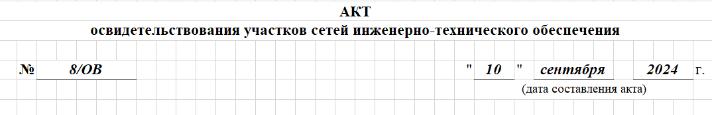
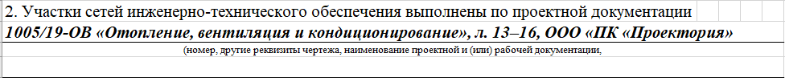
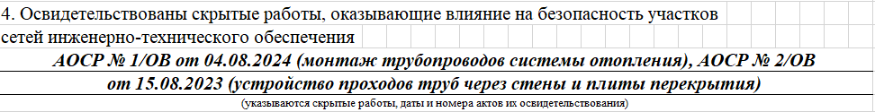
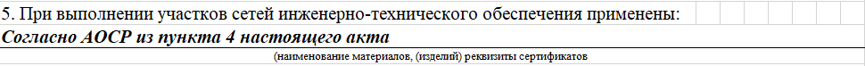
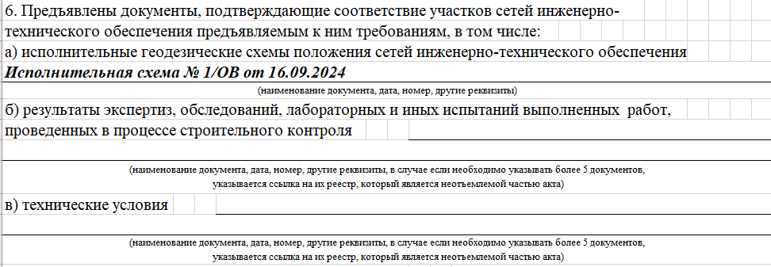
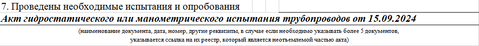
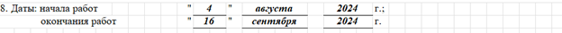
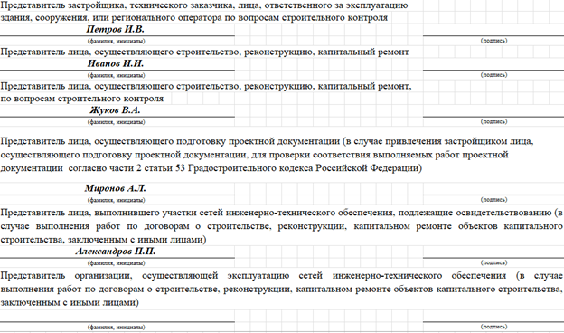
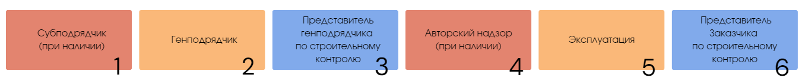

Составляем акт освидетельствования участков сетей инженерно-технического обеспечения (АОУСИТО)

Что такое сети инженерно-технического обеспечения
Посмотрите видео, в котором рассказали, что такое сети инженерно-технического обеспечения и для каких целей необходимо оформление АОУСИТО.
Источник и ограничения: видеоблок платформы не содержит открытого адреса файла.
В большинстве случаев объект капитального строительства должен быть подключен к сетям инженерно-технического обеспечения. Сеть инженерно-технического обеспечения - сеть электро-, газо-, тепло-, водоснабжения и водоотведения, сеть связи и другие сооружения, предназначенные для инженерно-технического обеспечения здания и (или) сооружения, а также совокупность таких сетей (ч. 20 ст. 2 Федерального закона от 30.12.2009 № 384-ФЗ). Поэтому такие сети нам интересны в том случае, если подключение (технологическое присоединения) объекта к таким сетям предусмотрено проектной документацией.
Законодательство предусматривает проведение контроля соответствия выполненных работ проектным требованиям и техническим регламентам в области безопасности участков сетей инженерно-технического обеспечения. Такой контроль осуществляется в случаях, когда устранение недостатков невозможно без разборки или повреждения конструкций и других участков сетей ИТО. Это дает возможность своевременно выявить и исправить все ошибки и недостатки. По итогам проведенного контроля за такими участками составляется акт освидетельствования участков сетей ИТО.
Смотрите в памятке ниже, где именно устанавливаются перечни таких работ.
Как составить АОУСИТО
Бланк АОУСИТО представляет собой двусторонний документ формата А4. Рекомендуемая форма АОУСИТО – приложение «5» Приказа Минстроя России от 16.05.2023 № 344/пр. Условно АОУСИТО можно разделить на пять блоков. Смотрите ниже на образцах, как заполнять каждый раздел акта.
Блок 1. Шапка бланка
Блок 2. Номер акта и дата подписания
Каждому акту присваивается индивидуальный номер, который вносится в реестр исполнительной документации. Фактически номер может быть любым, главное, чтобы не повторялся. Может быть сквозная нумерация (1,2,3..), а может по разделам проекта (1-ОВ, 2-ОВ..). В случае, если сложная нумерация, то там может добавиться еще номер корпуса (1-ОВ-1, 2-ОВ-1..). На наш взгляд, очень удобный метод систематизации — это указание совместно с номером акта еще и раздела проекта, например, 1-ОВ. Где 1 – порядковый номер, ОВ – шифр проекта.
Даты выполнения работ обязательно должны соответствовать датам в общем журнале работ. Дата подписания не может быть раньше даты окончания работ. Также дата окончания и дата подписания не должны быть позже даты начала последующих работ

Блок 3. Состав комиссии, участвующей в освидетельствовании участков сетей ИТО
Данные всех лиц, участвующих в освидетельствовании выясняем на этапе заполнения шапки акта, запросив необходимые данные.
- Представитель застройщика, технического заказчика, лица, ответственного за эксплуатацию здания, сооружения, или регионального оператора по вопросам строительного контроля – это представитель заказчика.
Если организация состоит в СРО. Вносим должность и фамилию с инициалами ответственного лица, указываем идентификационный номер в НРС НОСТРОЙ (можно запросить выписку или посмотреть на сайте http://nrs.nostroy.ru/) и реквизиты приказа. Если строительный контроль со стороны заказчика осуществляется сторонней организацией, то указываем еще и реквизиты этой организации (в зависимости от того ИП или юр.лицо, требования по реквизитам разные).
- Представитель лица, осуществляющего строительство, реконструкцию, капитальный ремонт – это представитель подрядчика (либо генподрядчика, если есть субподрядчик).
Вносим должность и фамилию с инициалами ответственного лица, и реквизиты приказа.
- Представитель лица, осуществляющего строительство, реконструкцию, капитальный ремонт, по вопросам строительного контроля – это стройконтроль подрядчика (или генподрядчика).
Если организация состоит в СРО. Вносим должность и фамилию с инициалами ответственного лица, указываем идентификационный номер в НРС НОСТРОЙ (можно запросить выписку или посмотреть на сайте http://nrs.nostroy.ru/) и реквизиты приказа.
- Представитель лица, осуществляющего подготовку проектной документации – заполоняется только в том случае, если предусмотрен авторский надзор по договору с заказчиком.
Вносим должность и фамилию с инициалами ответственного лица, и реквизиты приказа. В случае, если АН осуществляет третье лицо (не то, которое разработало проект), то заполняем реквизиты юр лица, либо ИП согласно подстрочнику.
- Представитель лица, выполнившего участки сетей инженерно-технического обеспечения – заполняется в случае, выполнения работ иными лицами по договору. Это представитель от субподрядчика.
Вносим должность и фамилию с инициалами ответственного лица, и реквизиты приказа. Также заполняем реквизиты юр лица, либо ИП согласно подстрочнику.
- Представитель организации, осуществляющей эксплуатацию сетей инженерно-технического обеспечения – представитель от эксплуатации. Это может быть собственник сети, а также организация, которая по эксплуатирует сети по договору.
Не стоит создавать себе прецедент для замечаний и вписывать в акт представителей без основания. Основание – это распорядительный документ, подтверждающий полномочия (приказ или распоряжение, например) директора рассматриваемой организации о том, что такое-то лицо выполняет такие-то обязанности на объекте.
Блок 4. Посвящен описанию строительных конструкций работ.
4.1. Заполнение строки №1:« К освидетельствованию предъявлены следующие участки сети инженерно-технического обеспечения».
Указываем наименование участка сети, который предъявляем. Также указываем краткую характеристику: оси, высотные отметки, этажи, иные координаты, в которых расположен участок, для ее точного определения. Если в проекте прописана маркировка, то также вносим запись согласно проекту.

4.2. Заполнение строки №2: «Участки сетей инженерно-технического обеспечения выполнены по проектной документации».
В данной строке необходимо прописать шифр проектной/рабочей документации, а также указать информацию о лицах, разработавших проект.

Информацию берем из штампов проектной/рабочей документации.
4.3. Заполнение строки №3: «Технические условия подключения объекта капитального строительства к сетям ИТО предоставлены».
В этой строке указываем номер и дату технических условий, кем выданы, их срок действия. По требованию заказчика можно внести дополнительную информацию.
Технические условия подключения (технологического присоединения) объектов к сетям инженерно-технического обеспечения определяются в соответствии с правилами подключения (технологического присоединения) к сетям инженерно-технического обеспечения соответствующего вида. Ту являются обязательными приложениями к договорам о подключении (технологическом присоединении), которые могут заключаться лицами, указанными в ч.5 и 6 ст. 52.1 ГрК РФ с правообладателем сети инженерно-технического обеспечения. ТУ выдаются для того, чтобы заключить договор о подключении (технологическом присоединении).
Срок действия ТУ устанавливается правообладателем сети инженерно-технического обеспечения не менее чем на три года или при комплексном развитии территории не менее чем на пять лет. При оформлении АОУСИТО обычно ТУ уже получены. ТУ можно взять из раздела проекта «Пояснительная записка» (ч.10 Постановления Правительства РФ от 16.02.2008 № 87). Если в проекте отсутствуют, то запросите у заказчика. Если срок действия ТУ истек, то также запросите новые ТУ у заказчика.

4.4. Заполнение строки №4: «Освидетельствованы скрытые работы, оказывающие влияние на безопасность участков сетей ИТО:».
В этой строке указываем заполненные и подписанные в ходе строительно-монтажных работ АОСР, которые необходимо расположить в хронологическом порядке. Указать их даты, порядковые номера и наименования. Прописываем именно те акты, которые имеют отношение к освидетельствуемому участку.

4.5. Заполнение строки №5: «При выполнении участков сетей инженерно-технического обеспечения применены».
Если в АОСР п. 3 заполнен (которые перечислены в п.3 АОУСИТО), то в п.4 вносим следующую запись: «Согласно АОСР из п. 3 настоящего акта» (запись может быть иной, согласуйте с заказчиком). Если в АОСР данные отсутствуют, то заполняем всю информацию об использованных материалах: их наименования, документы, подтверждающие качество (паспорт, сертификат, декларация о соответствии). Данная строка заполняется путем внесения данных, касательно наименования используемых в работе материалов и указанием документов о качестве. Применяемые материалы обязательно должны соответствовать проекту. При замене материала – обязательно согласуйте с заказчиком.
Смотрите в памятке ниже, какие документы о качестве могут быть.
Строительные материалы, на которые не распространяются действия технических регламентов и которые при этом не включены ни в один из перечней, то в этом случае не подлежат обязательному подтверждению соответствия (п. 3.1 статьи 46 184-ФЗ «О техническом регулировании»). Соответственно, можно приложить отказное письмо на такой материал.
Чаще всего, конечно, АОСР не подписывают без указания применяемых материалов. Те материалы или изделия, которые не входят в состав скрытых работах, например, радиаторы, прописываем согласно подстрочнику или примеру в АОСР.

4.6. Заполнение строки №6: «Предъявлены документы, подтверждающие соответствие участков сетей ИТО предъявляемым к ним требованиям, в том числе:».
В этой строке указываем список документов, подтверждающих соответствие работ проекту и предъявленным требованиям.
В пункт «а» заносим данные обо всех исполнительных геодезических схемах, которые соответствуют положению сети.
В пункт «б» заносим данные обо всех лабораторных испытаниях, экспертизах и обследованиях, произведенных в процессе строительного контроля. Например, протокол уплотнения песка, если это наружные работы по устройству ливневой канализации.
В пункт «в» вносим данные о технических условиях (подсказка строка 3).

4.7. Заполнение строки №7: «Проведены необходимые испытания и опробования».
В этой строке указываем мероприятия промежуточного контроля, осуществляемые на площадке в ходе работ, например, акт о проведении испытания систем канализации и водостоков.

4.8 Заполнение строки №8: «Даты».
Тут требуется указать дату начала и дату окончания работ, указанных в акте. Даты, которые указаны в АОУСИТО, должны совпадать с датами, указанными в АОСР, общем журнале работ и специальных журналах работ.

4.9. Заполнение строки №9: «Предъявленные участки сетей инженерно-технического обеспечения выполнены в соответствии с техническими условиями подключения, техническими регламентами, иными нормативными правовыми актами и проектной документацией».
В эту строку нужно технические регламенты и нормативные акты, и проектная/рабочая документация, которым должны соответствовать выполненные работы. продублировать шифр раздела проектной/рабочей документации в соответствии с которой проводились работы.

Дополнительная информация, которую необходимо указать в блоке описания участков сетей ИТО:
Строка «Дополнительные сведения»:
Строка для указания дополнительных сведений. В зависимости от ситуации сюда можно и нужно написать то, что необходимо отразить в акте дополнительно. Например то, что влияет на результат освидетельствования. В подавляющем большинстве случаев тут стоит отметка «Отсутствуют». Либо ничего не указывают.
Строка с указанием количества экземпляров составленного акта:
Количество экземпляров исполнительной документации должно соответствовать количеству лиц, подписывающих указанную документацию (ч.1 Приказа Минстроя России от 16.05.2023 № 344/пр). Также количество экземпляров можно уточнить в договоре подряда.
Строка «Приложения»:
В этой строке указываем весь список документов, прикладываемых к АОУСИТО, — то, что прописывали в пунктах 6 и 7.

Блок 5. Подписи ответственных лиц, участвующих в освидетельствовании участков сетей ИТО.
Заполняем согласно подстрочнику: фамилии и инициалы, и собираем подписи.

Порядок подписания обычно такой:

При подписании АОУСИТО важно придерживаться следующих правил:
- уведомляйте комиссию о приемке участков сетей ИТО заблаговременно, – не позднее, чем за 3 рабочих дня (пункт 9.1.29 СП 45.13330.2017, часть 11 Постановления № 468);
- не производите последующие работы, если участок не освидетельствован и не принят – это запрещено (часть 4 статьи 53 ГрК, часть 10 Постановления № 468);
- подписывайте акт только после устранения недостатков, если в процессе приемки они выявлены (часть 5 статьи 53 ГрК).
Задание
Закрепите свои знания по теме урока в быстроквизе. В нем всего пять вопросов. Выберите вариант ответа и проверьте его правильность.
Источник и ограничения: для просмотра требуется сеть и доступ к внешней площадке.
Отлично! Переходите в следующий урок. В нем вы научитесь составлять исполнительные схемы.
Примечание на 24.09.2026. Пункт 5 Порядка ведения ИД по приказу Минстроя № 344/пр изменён приказом № 369/пр с 01.03.2026. Перед применением изложенных здесь требований сверьте актуальную редакцию: приказ № 344/пр, изменение № 369/пр. Исходный учебный текст не изменён.
{kind=link}
{kind=link}
{kind=link}
{kind=link}
{kind=link}
{kind=link}
{kind=link}
{kind=link}
{kind=link}